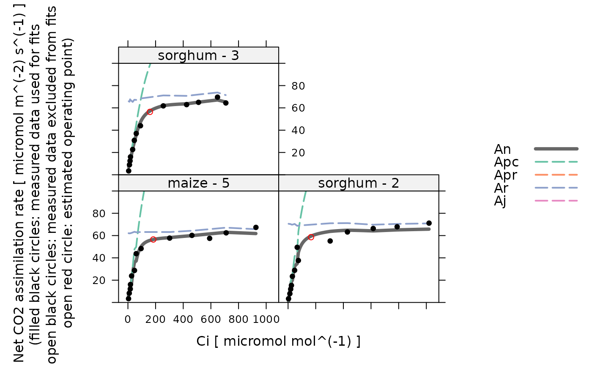

Fits a C4 assimilation model to an A-Ci curve
fit_c4_aci.RdFits the von Caemmerer model to an experimentally measured C4 A-Ci curve.
It is possible to fit the following parameters: alpha_psii, gbs,
gmc_at_25, J_at_25, RL_at_25, Rm_frac,
Vcmax_at_25, Vpmax_at_25, and Vpr.
By default, only a subset of these parameters are actually fit:
RL_at_25, Vcmax_at_25, and Vpmax_at_25. This can be
altered using the fit_options argument, as described below.
Best-fit parameters are found using maximum likelihood fitting, where the
optimizer (optim_fun) is used to minimize the error function (defined
by error_function_c4_aci).
Once best-fit parameters are found, confidence intervals are calculated
using confidence_intervals_c4_aci, and unreliable parameter
estimates are removed.
For temperature-dependent parameters, best-fit values and confidence intervals are returned at 25 degrees C and at leaf temperature.
See below for more details.
Usage
fit_c4_aci(
replicate_exdf,
Ca_atmospheric = NA,
ao_column_name = 'ao',
a_column_name = 'A',
ca_column_name = 'Ca',
ci_column_name = 'Ci',
gamma_star_column_name = 'gamma_star',
gmc_norm_column_name = 'gmc_norm',
j_norm_column_name = 'J_norm',
kc_column_name = 'Kc',
ko_column_name = 'Ko',
kp_column_name = 'Kp',
oxygen_column_name = 'oxygen',
rl_norm_column_name = 'RL_norm',
total_pressure_column_name = 'total_pressure',
vcmax_norm_column_name = 'Vcmax_norm',
vpmax_norm_column_name = 'Vpmax_norm',
sd_A = 'RMSE',
x_etr = 0.4,
optim_fun = optimizer_deoptim(200),
lower = list(),
upper = list(),
fit_options = list(),
relative_likelihood_threshold = 0.147,
hard_constraints = 0,
calculate_confidence_intervals = TRUE,
remove_unreliable_param = 2
)Arguments
- replicate_exdf
An
exdfobject representing one CO2 response curve.- Ca_atmospheric
The atmospheric CO2 concentration (with units of
micromol mol^(-1)); this will be used byestimate_operating_pointto estimate the operating point. A value ofNAdisables this feature.- a_column_name
The name of the column in
replicate_exdfthat contains the net assimilation inmicromol m^(-2) s^(-1).- ao_column_name
The name of the column in
exdf_objthat contains the dimensionless ratio of solubility and diffusivity of O2 to CO2.- ca_column_name
The name of the column in
replicate_exdfthat contains the ambient CO2 concentration inmicromol mol^(-1).- ci_column_name
The name of the column in
replicate_exdfthat contains the intercellular CO2 concentration inmicromol mol^(-1).- gamma_star_column_name
The name of the column in
exdf_objthat contains the dimensionlessgamma_starvalues.- gmc_norm_column_name
The name of the column in
replicate_exdfthat contains the normalized mesophyll conductance values (with units ofnormalized to gmc at 25 degrees C).- j_norm_column_name
The name of the column in
exdf_objthat contains the normalizedJvalues (with units ofnormalized to J at 25 degrees C).- kc_column_name
The name of the column in
exdf_objthat contains the Michaelis-Menten constant for rubisco carboxylation inmicrobar.- ko_column_name
The name of the column in
exdf_objthat contains the Michaelis-Menten constant for rubisco oxygenation inmbar.- kp_column_name
The name of the column in
exdf_objthat contains the Michaelis-Menten constant for PEP carboxylase carboxylation inmicrobar.- oxygen_column_name
The name of the column in
exdf_objthat contains the concentration of O2 in the ambient air, expressed as a percentage (commonly 21% or 2%); the units must bepercent.- rl_norm_column_name
The name of the column in
exdf_objthat contains the normalizedRLvalues (with units ofnormalized to RL at 25 degrees C).- total_pressure_column_name
The name of the column in
exdf_objthat contains the total pressure inbar.- vcmax_norm_column_name
The name of the column in
exdf_objthat contains the normalizedVcmaxvalues (with units ofnormalized to Vcmax at 25 degrees C).- vpmax_norm_column_name
The name of the column in
exdf_objthat contains the normalizedVpmaxvalues (with units ofnormalized to Vpmax at 25 degrees C).- sd_A
A value of the standard deviation of measured
Avalues, or the name of a method for determining the deviation; currently, the only supported option is'RMSE'.- x_etr
The fraction of whole-chain electron transport occurring in the mesophyll (dimensionless). See Equation 29 from S. von Caemmerer (2021).
- optim_fun
An optimization function that accepts the following input arguments: an initial guess, an error function, lower bounds, and upper bounds. It should return a list with the following elements:
par,convergence,feval, andconvergence_msg. Seeoptimizersfor a list of available options.- lower
A list of named numeric elements representing lower bounds to use when fitting. Values supplied here override the default values (see details below). For example,
lower = list(Vcmax_at_25 = 10)sets the lower limit forVcmax_at_25to 10 micromol / m^2 / s.- upper
A list of named numeric elements representing upper bounds to use when fitting. Values supplied here override the default values (see details below). For example,
upper = list(Vcmax_at_25 = 200)sets the upper limit forVcmax_at_25to 200 micromol / m^2 / s.- fit_options
A list of named elements representing fit options to use for each parameter. Values supplied here override the default values (see details below). Each element must be
'fit','column', or a numeric value. A value of'fit'means that the parameter will be fit; a value of'column'means that the value of the parameter will be taken from a column inexdf_objof the same name; and a numeric value means that the parameter will be set to that value. For example,fit_options = list(RL_at_25 = 0, Vcmax_at_25 = 'fit', Vpr = 'column')means thatRL_at_25will be set to 0,Vcmax_at_25will be fit, andVprwill be set to the values in theVprcolumn ofexdf_obj.- relative_likelihood_threshold
To be passed to
confidence_intervals_c4_aciwhencalculate_confidence_intervalsisTRUE.- hard_constraints
To be passed to
calculate_c4_assimilation; see that function for more details.- calculate_confidence_intervals
A logical value indicating whether or not to estimate confidence intervals for the fitting parameters using
confidence_intervals_c4_aci.- remove_unreliable_param
An integer value indicating the rules to use when identifying and removing unreliable parameter estimates. A value of 2 is the most conservative option. A value of 0 disables this feature, which is not typically recommended. See below for more details.
Details
This function calls calculate_c4_assimilation to calculate
values of net assimilation. The user-supplied optimization function is used to
vary the values of alpha_psii, gbs, gmc_at_25,
J_at_25, RL_at_25, Rm_frac, Vcmax_at_25,
Vpmax_at_25, and Vpr to find ones that best reproduce the
experimentally measured values of net assimilation. By default, the following
options are used for the fits:
alpha_psii: lower = -1, upper = 10, fit_option = 0gbs: lower = -1, upper = 10, fit_option = 0.003gmc_at_25: lower = -1, upper = 10, fit_option = 1J_at_25: lower = -50, upper = 1000, fit_option = 1000RL_at_25: lower = -10, upper = 100, fit_option ='fit'Rm_frac: lower = -10, upper = 10, fit_option = 0.5Vcmax_at_25: lower = -50, upper = 1000, fit_option ='fit'Vpmax_at_25: lower = -50, upper = 1000, fit_option ='fit'Vpr: lower = -50, upper = 1000, fit_option = 1000
With these settings, J_at_25 and Vpr are set to 1000 (so net
assimilation is essentially never limited by light or PEP carboxylase
regeneration), alpha_psii, gbs, gmc_at_25, and
Rm_frac are set to default values used in von Caemmerer (2000), and the
other parameters are fit during the process (see fit_options above).
The bounds are chosen liberally to avoid any bias.
An initial guess for the parameters is generated by calling
initial_guess_c4_aci as follows:
pcm_threshold_rlmis set to 40 microbar.If
alpha_psiiis being fit, thealpha_psiiargument ofinitial_guess_c4_aciis set to 0.1; otherwise, the argument is set to the value specified by the fit options.If
gbsis being fit, thegbsargument ofinitial_guess_c4_aciis set to 0.003; otherwise, the argument is set to the value specified by the fit options.If
gmc_at_25is being fit, thegmc_at_25argument ofinitial_guess_c4_aciis set to 1; otherwise, the argument is set to the value specified by the fit options.If
Rm_fracis being fit, theRm_fracargument ofinitial_guess_c4_aciis set to 0.5; otherwise, the argument is set to the value specified by the fit options.
Note that any fixed values specified in the fit options will override the values returned by the guessing function.
The fit is made by creating an error function using
error_function_c4_aci and minimizing its value using
optim_fun, starting from the initial guess described above. The
optimizer_deoptim optimizer is used by default since it has been
found to reliably return great fits. However, it is a slow optimizer. If speed
is important, consider reducing the number of generations or using
optimizer_nmkb, but be aware that this optimizer is more likely
to get stuck in a local minimum.
The photosynthesis model represented by calculate_c4_assimilation is
not smooth in the sense that small changes in the input parameters do not
necessarily cause changes in its outputs. This is related to the calculation
of the PEP carboxylase activity Vp, which is taken to be the minimum of
Vpr and Vpc. For example, if Vpr is high and Vp =
Vpc at all points along the curve, modifying Vpr by a small amount
will not change the model's outputs. Similar issues can occur when calculating
An as the minimum of Ac and Aj. Because of this,
derivative-based optimizers tend to struggle when fitting C4 A-Ci curves. Best
results are obtained using derivative-free methods.
Sometimes the optimizer may choose a set of parameter values where one of the
potential limiting rates Vpc or Vpr is never the smallest rate.
In this case, the corresponding parameter estimates (Vpmax or
Vpr) will be severely unreliable. Likewise, it may happen that one of
Ac or Aj is never the smallest rate. In this case the
corresponding parameter estimates (Vpmax, Vpr, and Vcmax,
or J) will be severely unreliable. This will be indicated by a value
of 0 in the corresponding trust column(for example,
Vcmax_trust). If remove_unreliable_param is 1 or larger,
then such parameter estimates (and the corresponding rates) will be replaced
by NA in the fitting results.
It is also possible that the upper limit of the confidence interval for a
parameter is infinity; this indicates a potentially unreliable parameter
estimate. This will be indicated by a value of 1 in the corresponding
trust column (for example, Vcmax_trust). If
remove_unreliable_param is 2 or larger, then such parameter
estimates (but not the corresponding rates) will be replaced by NA in
the fitting results.
The trust value for fully reliable parameter estimates is set to 2 and
they will never be replaced by NA.
Once the best-fit parameters have been determined, this function also
estimates the operating value of `PCm from the atmospheric CO2
concentration atmospheric_ca using
estimate_operating_point, and then uses that value to estimate
the modeled An at the operating point via
calculate_c4_assimilation. It also estimates the
Akaike information criterion (AIC).
This function assumes that replicate_exdf represents a single
C4 A-Ci curve. To fit multiple curves at once, this function is often used
along with by.exdf and consolidate.
Value
A list with two elements:
fits: Anexdfobject including the original contents ofreplicate_exdfalong with several new columns:The fitted values of net assimilation will be stored in a column whose name is determined by appending
'_fit'to the end ofa_column_name; typically, this will be'A_fit'.Residuals (measured - fitted) will be stored in a column whose name is determined by appending
'_residuals'to the end ofa_column_name; typically, this will be'A_residuals'.Values of fitting parameters at 25 degrees C will be stored in the
gmc_at_25,J_at_25,RL_at_25,Vcmax_at_25,Vpmax_at_25, andVprcolumns.The other outputs from
calculate_c4_assimilationwill be stored in columns with the usual names:alpha_psii,gbs,gmc_tl,Rm_Frac,Vcmax_tl,Vpmax_tl,RL_tl,RLm_tl,Vp,Apc,Apr,Ap,Ar,Ajm,Ajbs,Ac, andAj.
fits_interpolated: Anexdfobject including the calculated assimilation rates at a fine spacing ofCivalues (step size of 1micromol mol^(-1)).parameters: Anexdfobject including the identifiers, fitting parameters, and convergence information for the A-Ci curve:The number of points where
VpcandVprare each the smallest potential carboxylation rate are stored in then_Vpc_smallestandn_Vpr_smallestcolumns.The best-fit values are stored in the
alpha_psii,gbs,gmc_at_25,J_at_25,RL_at_25,Rm_frac,Vcmax_at_25,Vpmax_at_25, andVprcolumns. Ifcalculate_confidence_intervalsisTRUE, upper and lower limits for each of these parameters will also be included.For parameters that depend on leaf temperature, the average leaf-temperature-dependent values are stored in
X_tl_avgcolumns:gmc_tl_avg,J_tl_avg,Jmax_tl_avg,RL_tl_avg,Vcmax_tl_avg, andVpmax_tl_avg.The average leaf temperature is also stored in the
Tleaf_avgcolumn.Information about the operating point is stored in
operating_PCm,operating_Ci,operating_An, andoperating_An_model.The
convergencecolumn indicates whether the fit was successful (==0) or if the optimizer encountered a problem (!=0).The
fevalcolumn indicates how many cost function evaluations were required while finding the optimal parameter values.The residual stats as returned by
residual_statsare included as columns with the default names:dof,RSS,RMSE, etc.The Akaike information criterion is included in the
AICcolumn.
Examples
# Read an example Licor file included in the PhotoGEA package
licor_file <- read_gasex_file(
PhotoGEA_example_file_path('c4_aci_1.xlsx')
)
# Define a new column that uniquely identifies each curve
licor_file[, 'species_plot'] <-
paste(licor_file[, 'species'], '-', licor_file[, 'plot'] )
# Organize the data
licor_file <- organize_response_curve_data(
licor_file,
'species_plot',
c(9, 10, 16),
'CO2_r_sp'
)
# Calculate temperature-dependent values of C4 photosynthetic parameters
licor_file <- calculate_temperature_response(licor_file, c4_temperature_param_vc)
# Calculate the total pressure in the Licor chamber
licor_file <- calculate_total_pressure(licor_file)
# For these examples, we will use a faster (but sometimes less reliable)
# optimizer so they run faster
optimizer <- optimizer_nmkb(1e-7)
# Fit just one curve from the data set (it is rare to do this).
one_result <- fit_c4_aci(
licor_file[licor_file[, 'species_plot'] == 'maize - 5', , TRUE],
Ca_atmospheric = 420,
optim_fun = optimizer
)
# Fit all curves in the data set (it is more common to do this)
aci_results <- consolidate(by(
licor_file,
licor_file[, 'species_plot'],
fit_c4_aci,
Ca_atmospheric = 420,
optim_fun = optimizer
))
# View the fitting parameters for each species / plot
col_to_keep <- c(
'species', 'plot', # identifiers
'RL_at_25', 'Vcmax_at_25', 'Vpmax_at_25', 'Vpr', # parameters scaled to 25 degrees C
'RL_tl_avg', 'Vcmax_tl_avg', 'Vpmax_tl_avg', # average temperature-dependent values
'operating_Ci', 'operating_An', 'operating_An_model', # operating point info
'dof', 'RSS', 'MSE', 'RMSE', 'RSE', # residual stats
'convergence', 'convergence_msg', 'feval', 'optimum_val' # convergence info
)
aci_results$parameters[ , col_to_keep, TRUE]
#>
#> Converting an `exdf` object to a `data.frame` before printing
#>
#> species [UserDefCon] (NA) plot [UserDefCon] (NA)
#> 1 maize 5
#> 2 sorghum 2
#> 3 sorghum 3
#> RL_at_25 [fit_c4_aci] (micromol m^(-2) s^(-1))
#> 1 -2.9755380
#> 2 0.7310165
#> 3 -3.8073959
#> Vcmax_at_25 [fit_c4_aci] (micromol m^(-2) s^(-1))
#> 1 33.90724
#> 2 42.62049
#> 3 35.99257
#> Vpmax_at_25 [fit_c4_aci] (micromol m^(-2) s^(-1))
#> 1 158.2041
#> 2 149.4444
#> 3 124.2466
#> Vpr [fit_c4_aci] (micromol m^(-2) s^(-1))
#> 1 NA
#> 2 NA
#> 3 NA
#> RL_tl_avg [fit_c4_aci] (micromol m^(-2) s^(-1))
#> 1 -4.754928
#> 2 1.133062
#> 3 -6.101133
#> Vcmax_tl_avg [fit_c4_aci] (micromol m^(-2) s^(-1))
#> 1 58.81075
#> 2 71.31785
#> 3 62.63542
#> Vpmax_tl_avg [fit_c4_aci] (micromol m^(-2) s^(-1))
#> 1 225.3214
#> 2 208.0087
#> 3 177.3176
#> operating_Ci [estimate_operating_point] (micromol mol^(-1))
#> 1 183.4839
#> 2 166.2077
#> 3 158.8843
#> operating_An [estimate_operating_point] (micromol m^(-2) s^(-1))
#> 1 52.35755
#> 2 51.85285
#> 3 51.32954
#> operating_An_model [fit_c4_aci] (micromol m^(-2) s^(-1))
#> 1 56.49683
#> 2 58.59107
#> 3 56.40279
#> dof [residual_stats] (NA) RSS [residual_stats] ((micromol m^(-2) s^(-1))^2)
#> 1 10 217.81625
#> 2 10 448.94801
#> 3 10 48.82484
#> MSE [residual_stats] ((micromol m^(-2) s^(-1))^2)
#> 1 16.755096
#> 2 34.534462
#> 3 3.755757
#> RMSE [residual_stats] (micromol m^(-2) s^(-1))
#> 1 4.093299
#> 2 5.876603
#> 3 1.937978
#> RSE [residual_stats] (micromol m^(-2) s^(-1)) convergence [fit_c4_aci] ()
#> 1 4.667079 0
#> 2 6.700358 0
#> 3 2.209634 0
#> convergence_msg [fit_c4_aci] () feval [fit_c4_aci] ()
#> 1 Successful convergence 160
#> 2 Successful convergence 169
#> 3 Successful convergence 135
#> optimum_val [fit_c4_aci] ()
#> 1 36.76777
#> 2 41.46893
#> 3 27.04758
# View the fits for each species / plot
plot_c4_aci_fit(aci_results, 'species_plot', 'Ci', ylim = c(0, 100))

# View the residuals for each species / plot
lattice::xyplot(
A_residuals ~ Ci | species_plot,
data = aci_results$fits$main_data,
type = 'b',
pch = 16,
auto = TRUE,
grid = TRUE,
xlab = paste('Intercellular CO2 concentration [', aci_results$fits$units$Ci, ']'),
ylab = paste('Assimilation rate residuals [', aci_results$fits$units$A_residuals, ']')
)